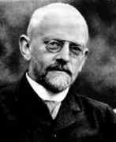
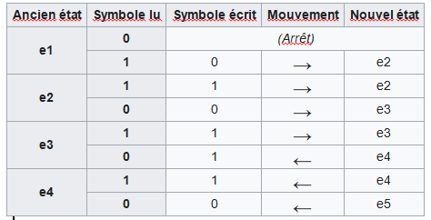
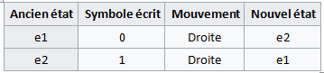
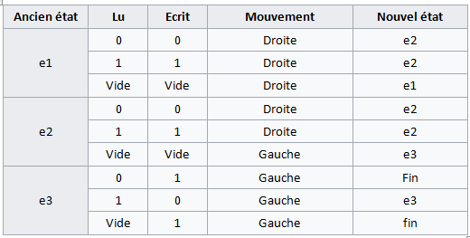

Programme en tant que donnée, Calculabilité, Problème de l'arrêt
Programme en tant que donnée


On a vu en classe de première avec l'architecture von Neumann que les données et les programmes sont stockés ensembles dans la mémoire de l'ordinateur. Rien n'empêche donc un programme d'utiliser le code d'un autre programme en mémoire pour le lire, l'écrire ou l'exécuter.
Cours
La dualité entre programme et données est un concept fondamental en informatique : les programmes sont des données comme les autres.
Un programme peut donc lire un programme en entrée, écrire un programme en sortie ou exécuter un autre programme.


C'est une situation qui est souvent rencontrée en pratique :
- Les interpréteurs sont des programmes qui prennent en entrée la description d'un autre programme et qui simulent ce programme. Un programme Python est interprété, c'est-à-dire qu'il est compilé en une description dans un codage que l'on appelle bytecode. Lorsqu'on cherche à lancer ce programme, l'interpréteur simule ce bytecode
- Les compilateurs sont aussi des bons exemples. Le langage C est un langage compilé : une fois le code source terminée, le compilateur (qui est un logiciel comme un autre) "transforme" ce code source en langage machine.
- Un système d'exploitation peut être vu comme un programme qui fait "tourner" d'autres programmes
- Les logiciels de téléchargement permettent de télécharger d'autres logiciels.
- Il existe des programmes de détection d'erreurs (ou preuve de correction)1 capables de lire d'autres programmes afin de détecter certaines erreurs dans leur code source.
Dans le même ordre d'idée, une fonction Python peut lire et exécuter une autre fonction, par exemple la fonction calcule ci-dessous admet deux paramètres, une fonction f et une valeur x.
Calculabilité et problème de la décision (Entscheidungsproblem)

(1862-1943)
Si nous avons l'intuition que l'on peut trouver un algorithme qui donne la solution pour la plupart des fonctions et des problèmes mathématiques que nous connaissons (somme, différence, produit, division, puissance, PGCD, etc…), une question fondamentale de l'informatique théorique est de déterminer si un problème donné peut être "calculé"2 ou non par un algorithme que l'on peut programmer. Est-il possible de tout programmer ? Suffit-il de donner la spécification d'une fonction ou d'un problème pour que l'on puisse la réaliser à l'aide d'un algorithme adéquat ?
Autrement dit, est-ce que toute fonction est calculable ? Et de la même façon, est-ce que tout problème de décision (dont la réponse est vraie ou fausse) est décidable ? Ce problème est connu sous le nom du problème de la décision, ou sous son nom d'origine en allemand Entscheidungsproblem, en référence à la question posée par David Hilbert en 1928.
Cours
On dit qu'une fonction est calculable ou qu'un problème de décision est décidable lorsqu'il existe un algorithme pour le résoudre : c'est-à-dire qu'il prend en entrée la donnée du problème, effectue des calculs bien définis, et termine toujours en temps fini3 en répondant à la question posée.
Deux mathématiciens, Alonzo Church et Alan Turing vont chacun à leur manière répondre à cette question.
Church et le lambda calcul
(1903-1995)
Cours
Entre 1932 et 1936, Alonzo Church a identifié une classe de fonctions arithmétiques qui semblait posséder les propriétés intuitives des fonctions calculables : le lambda-calcul (ou λ-calcul).
L'idée de base du lambda-calcul est que tout est fonction. Il est possible de fabriquer des fonctions en disant que si \(E\) est une expression, on crée la fonction qui à \(x\) fait correspondre l'expression \(E\) ; on écrit \(λx.E\) cette nouvelle fonction.
| Notation classique | λ-calcul |
|---|---|
| \(f:N→ N\) \(x ⟼E\) |
\(λx.E\) |
| \(g:N→ N\) \(x ⟼2x+1\) |
\(λx.2x + 1\) |
| \(h:N→ N\) \(x ⟼x^2\) |
\(λx.x×x\) |
Une fonction est en particulier exprimée par une expression qui peut contenir des fonctions qui ne sont pas encore définies : ces dernières sont remplacées par des variables. Par exemple il est possible de construire :
- la fonction constante égale à \(x\), à savoir \(λy.x\) , puis
- la fonction qui fabrique les fonctions constantes, où la constante \(x\) est un paramètre : \(λx.(λy.x)\).
- etc.
Le lambda-calcul fournit un langage précis pour décrire les fonctions et les simplifier. La fonction \(λx.(λy.x)\) peut aussi s'écrire \(λx.λy.x\), c'est-à-dire une fonction qui prend deux paramètres \(x\) et \(y\) et renvoie simplement la valeur \(x\).
En Python la fonction \(λx.x × x\) qui renvoie le carré d'un nombre peut de programmer rapidement :
Les fonctions lambda sont principalement utilisées pour être utilisées par d'autres fonctions qui prennent une fonction comme argument, par exemple :
>>> l = ['id01', 'id10', 'id02', 'id12', 'id03', 'id13']
>>> tri_l = sorted(l, key=lambda x: int(x[2:]))
>>> tri_l
['id01', 'id02', 'id03', 'id10', 'id12', 'id13']
Le lambda-calcul est à l'origine des fonctions lambda en Python (et dans d'autres langages comme Java, C#) et des langages fonctionnels : CAML, Haskell, LISP, Scala…
La machine de Turing

(1912-1954)
Alan Turing a publié en 1936 un article intitulé : « On Computable Numbers, with an Application to the Entscheidungsproblem »4 dans lequel il décrit un dispositif que son maître de thèse Alonzo Church appellera une machine de Turing.
Cours
Quoique son nom de « machine » puisse conduire à croire le contraire, une machine de Turing est un modèle abstrait (inventé avant l'apparition des ordinateurs) qui définit ce qu'est un calcul.
La machine de Turing est à l'origine des ordinateurs et des langages de programmation impératifs et fait d'Alan Turing le « père » de la science informatique.



Une machine de Turing comporte les éléments suivants :
-
Un ruban supposé infini contenant des caractères (typiquement des 0 et 1 mais pas que) ou vide (blanc ou ●).
-
Une tête de lecture/écriture qui peut se déplacer vers la gauche ou vers la droite du ruban5.
-
Une variable d'état qui mémorise l'état courant de la machine de Turing.
-
Une table d'actions ou programme qui indique quel symbole écrire, comment déplacer la tête de lecture, quel est le nouvel état, en fonction du symbole lu sur le ruban et de l'état courant de la machine. Si aucune action n'existe pour une combinaison donnée d'un symbole lu et d'un état courant, la machine s'arrête.
On peut aussi représenter un programme sous la forme d'un graphe orienté avec les changements d'états et en écrivant sur les branches le caractère lu, le caractère écrit et le déplacement (dans l'ordre)


Prenons l'exemple d'une machine de Turing permettant d'écrire \(1/3\) en binaire6, c'est à dire une suite de 0 et de 1 consécutifs, 010101010101..., sur un ruban vide. Elle peut se représenter sous la forme d'une table d'action ou d'un graphe :



L'exécution de cette machine serait (la position de la tête de lecture/écriture sur le ruban est inscrite en caractères surlignés) :
| Étape | État | Ruban |
|---|---|---|
| 1 | e1 | 0 |
| 2 | e2 | 01 |
| 3 | e1 | 010 |
| 4 | e2 | 0101 |
| 5 | e1 | 01010 |
| 6 | e2 | 010101 |
| ... | e1 | 010101... |
Le comportement de cette machine peut être décrit comme une boucle infinie :
- Elle démarre son exécution dans l'état e1, ajoute un 0 et se déplace à droite.
- Puis elle passe à l'état e2, ajoute un 1 et se déplace à droite.
- Elle revient dans l'état e1 et réitère la première étape.
Exercice corrigé
Construire une machine de Turing qui ajoute 1 à un nombre binaire.
Aide
Si le nombre binaire se termine par 0, par exemple : 1001010 + 1 = 1001011, dans ce cas il suffit de remplacer le dernier 0 par un 1. On parcourt le nombre de gauche à droite jusqu'à la fin, si on trouve un 0, on le remplace par un 1 et on passe à l'état final.
Si le nombre binaire se termine par 1, par exemple : 1001011 + 1 = 1001100, dans ce cas après avoir parcouru le nombre de gauche à droite, on revient de droite à gauche, tant qu'on trouve un 1, on le remplace par un 0, lorsqu'on trouve la première occurrence de 0, on la remplace par 1 puis on passe à l'état final.
Cas particulier de nombre se terminant par 1, un nombre peut être formé seulement par des 1, par exemple : 1111111 + 1 = 10000000 dans ce cas, on remplace tous les 1 par 0 et on insère un 1 dans la première case vide à gauche.
Réponse
La machine de Turing se comporte de la façon suivante:
- Au début elle est dans l'état e1 et parcourt le ruban vide, de la gauche vers la droite sans modifier le ruban, jusqu'à trouver un nombre en binaire. Elle passe alors dans l'état e2.
- Dans l'état e2, elle parcourt le nombre en binaire, de la gauche vers la droite sans modifier les chiffres du ruban, jusqu'à trouber le dernier bit. Elle passe alors dans l'état e3.
-
Dans l'état e3, elle parcourt les chiffres du nombre en binaire de la droite vers la gauche cette fois ci :
- si elle lit un 1, elle écrit 0, se déplace à gauche et reste à l'état e3.
- si elle lit un 0, elle écrit 1, se déplace à gauche et passe à l'état final.
- si elle trouve une case vide, c'est qu'elle a parcouru tout le nombre sans trouver de 0, elle écrit donc un 1, se déplace à gauche et passe à l'état final.

Thèse de Church ou Turing-Church
Turing montra, en 1937, que la classe des fonctions calculables, au sens de Church, était équivalente à la classe des fonctions programmables sur les machines imaginaires qu'il avait conçues ce qui a conduit à la « Thèse de Church ou Turing-Church» : pour certaines fonctions il n'existe pas d'algorithme capable de calculer l'image d'un nombre, ces fonctions sont dites non-calculables. Réciproquement, s'il existe un algorithme capable de calculer l'image d'un nombre par une fonction, alors cette fonction est dite calculable.
Cours
Ils énoncent le principe selon lequel tout ce qui est calculable peut être calculé indifféremment sur l'un de ces deux modèles et donc la notion de calculabilité ne dépend pas du langage de programmation utilisé.
Aujourd'hui, la thèse de Turing-Church est remise en cause par les circuits quantiques7.
Le problème de l'arrêt
Un programme qui permettrait de tester si un autre programme va finir par s'arrêter, quel que soit le cas traité, serait d'une grande aide pour tous les développeurs du monde ! Grace aux travaux d'Alonzo Church et d'Alan Turing, on sait qu'un tel programme ne peut pas exister.
Cours
Le problème de l'arrêt est indécidable.
Partons du principe que ce programme "Arrêt?" existe (raisonnement par l'absurde). "Arrêt?" prend en entrée un programme P et répond True si le programme P s'arrête, et False s'il ne s'arrête jamais.


Construisons maintenant un autre programme "Paradoxe"7 qui prend en entrée un programme P et lui applique le programme Arrêt: • Si "Arrêt?" renvoie True, "Paradoxe" entre dans une boucle infinie (il ne s'arrête jamais) • Si "Arrêt?" renvoie False, "Paradoxe" s'arrête.


"Paradoxe" est un programme comme les autres, on peut donc l'utiliser en entrée de lui-même.


Analysons ce qui se passe :
- Si le programme "Paradoxe" en entrée est un programme qui s'arrête, alors "Arrêt?" répond "True", donc "Paradoxe" tombe dans une boucle infinie, donc "Paradoxe" ne s'arrête pas. C'est une contradiction !
- Si "Paradoxe" en entrée est un programme qui ne s'arrête pas, alors "Arrêt?" répond "False", donc "Paradoxe" s'arrête. C'est aussi une contradiction !
Dans les deux cas, nous avons une contradiction, nous pouvons donc en conclure que le programme "Paradoxe" ne peut pas exister. Et si le programme "Paradoxe" ne peut pas exister, cela signifie que le programme "Arrêt?" ne peut pas exister non plus (puisque « Paradoxe » se base sur "Arrêt?").
Nous venons donc bien de démontrer que le programme "Arrêt?" ne peut pas exister. Le problème de l'arrêt est donc indécidable.
Cette idée d'avoir un problème indécidable, autrement dit qui ne peut pas être résolu par un algorithme, peut être généralisée : il existe en effet de nombreux problèmes indécidables, par exemple montrer que l'image de deux fonctions est la même pour tous les nombres, que la suite de Syracuse se termine toujours par les valeurs 4, 2, 1, le problème de correspondance de Post, etc.
Une vidéo pour en savoir plus sur l'Entscheidungsproblem :
-
Le développement de programmes de "détection d'erreurs" a connu une forte croissance en France, notamment depuis l'accident du vol 501 d'Ariane 5 du 4 juin 1996 ou encore de la mise au point du métro automatique Meteor (ligne 14 à Paris). ↩
-
Le mot « calcul » vient de calculus qui signifie caillou en latin. Pour se convaincre de la pertinence de cette origine, il suffit d'évoquer le décompte des nombres à l'aide de petits cailloux ↩
-
La notion de problème décidable ne fait aucune hypothèse sur le temps passé à résoudre la question — à part qu'il soit toujours fini. Ainsi, à l'intérieur des problèmes décidables, il y a tout ce qui concerne la complexité, entre les problèmes solubles dans un temps polynomial (P), et non polynomial (NP). Par exemple le problème du remplissage d'un sac à dos, ne pouvant supporter plus d'un certain poids, avec tout ou partie d'un ensemble donné d'objets ayant chacun un poids et une valeur. Les objets mis dans le sac à dos doivent maximiser la valeur totale, sans dépasser le poids maximum. Ce problème est difficile du point de vue de la complexité et l'on ne connaît pas de méthode générale pour construire une solution optimale, mais il est certainement décidable, il suffit par exemple d'énumérer toutes les solutions envisageables. ↩
-
Sur les nombres calculables avec une application au problème de la décision :https://www.cs.virginia.edu/~robins/Turing_Paper_1936.pdf. ↩
-
Attention, dans certains cas c'est le ruban qui se déplace au lieu de la tête de lecture, les déplacements sont alors inversés. ↩
-
Un paradoxe est une proposition qui contient une contradiction logique, ou un raisonnement qui aboutit à une absurdité. Le paradoxe du menteur en est un exemple célèbre. ↩↩